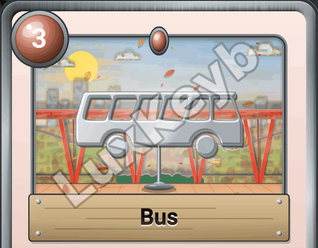
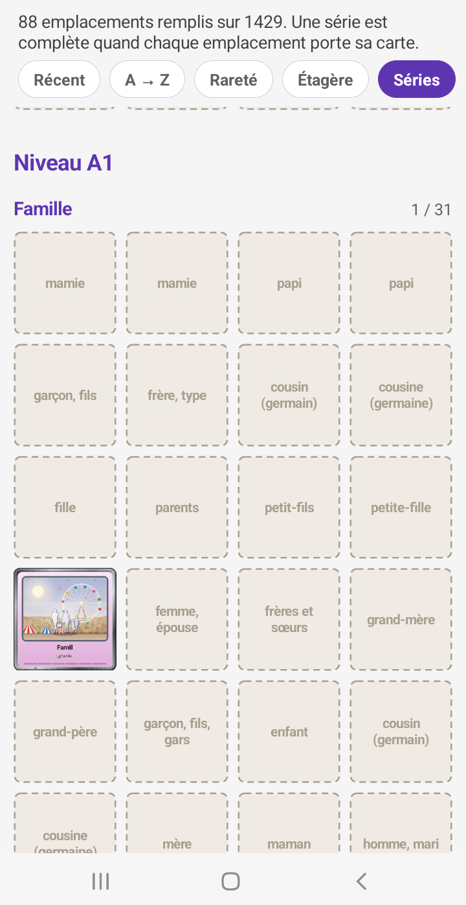
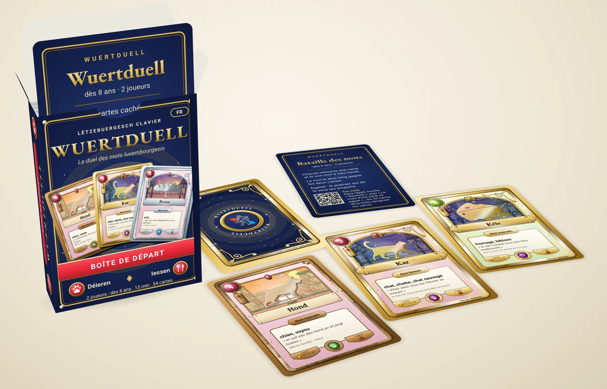
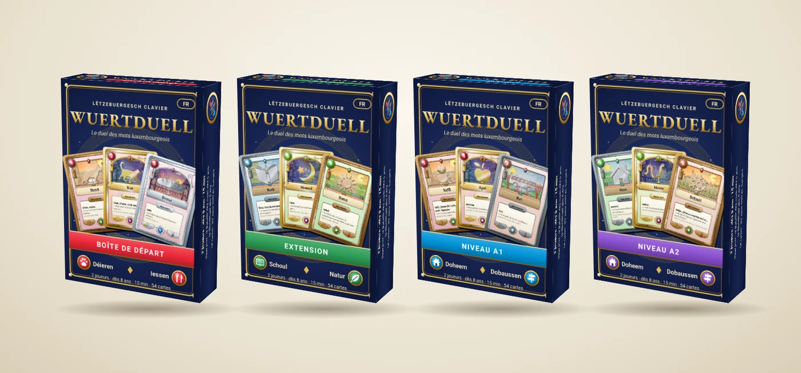
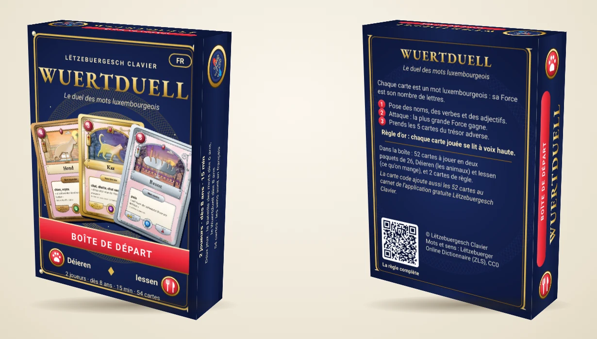
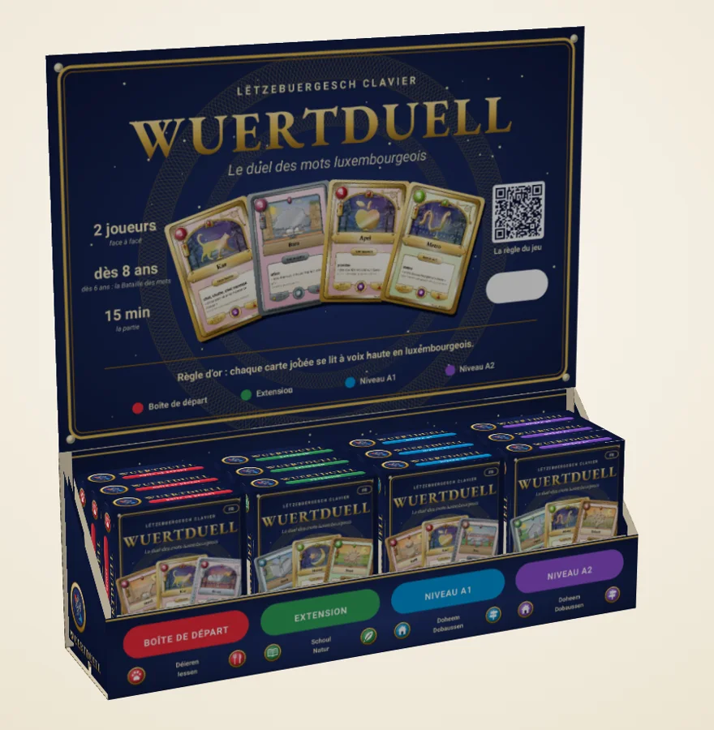
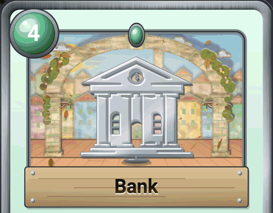

Ihre Karten werden lebendig. Und bald auf dem Tisch?
Diesen Monat wurden die Karten der App komplett neu gemalt, die Wörter des Alltags haben ihr eigenes Album, und wir haben eine Frage an Sie: Wie wäre es mit einem echten Kartenspiel auf Luxemburgisch?
Karten wie von Hand gemalt
Jede Karte sieht jetzt aus wie ein kleines Papiertheater. Der Himmel, die Wolken, die Hügel, die Stadt in der Ferne: Alles ist aus Karton ausgeschnitten und mit Gouache in kräftigen Farben bemalt. Neigen Sie Ihr Handy, und jedes Stück der Kulisse gleitet in seinem eigenen Tempo, als würden Sie durch ein Fenster schauen. Wolken ziehen über den Himmel, im Herbst fallen die Blätter.

Das Bild des Wortes füllt jetzt das ganze Fenster. Katze, Bus und Haus erkennt man auf den ersten Blick, selbst ganz klein im Album. Und es gibt einen neuen Ort zu entdecken: den Breedewee, in den Farben des Grund.
Die Wörter des Alltags, Seite für Seite
Sie sind neu in Luxemburg, helfen Ihren Kindern bei den Hausaufgaben oder möchten sich endlich an ein paar Sätze wagen? Das Album hat jetzt eine Reihe „Niveau A1“: die ersten Wörter, die man kennen sollte, nach Themen geordnet, etwa Familie, Zuhause oder Einkaufen.
- Ein leeres Feld zeigt die Bedeutung des gesuchten Wortes: Sie gewinnen es beim Spielen.
- Alle wichtigen Wörter des Alltags haben ihre Karte.
- Zahlenkarten zeigen ihre Zahl groß an: „zweeavéierzeg“ ist 42.


Und wenn die Karten aus dem Handy kämen?
Wir stellen uns ein echtes Kartenspiel auf Luxemburgisch vor, das Wuertduell, für zwei Spieler, in der Familie oder in der Schule, um die Sprache ganz nebenbei zu lernen. Noch ist nichts entschieden: weder das Datum noch der Preis. Bevor wir weitermachen, möchten wir wissen, ob Ihnen die Idee gefällt.
Zwei Arten zu spielen
- Die Wörterschlacht, ab 6 Jahren: Jeder deckt eine Karte auf und liest das Wort laut vor, das längste Wort gewinnt. So lernt man beim Spielen.
- Das Wuertduell, ab 8 Jahren: ein echtes Duell, bei dem man seine Karten und seine Strategie wählt. Die Regeln lesen (auf Französisch).
Boxen zum Sammeln

Jede Box würde zwei Wortfamilien gegeneinander antreten lassen, zum Beispiel:
Jede Box ließe sich allein spielen, gleich nach dem Öffnen, oder mit den anderen zusammen. Je seltener eine Karte, desto kostbarer ihr Rahmen. Und ein Code in der Box würde ihre Karten dem Album der App hinzufügen: Die Sammlung ginge auf dem Handy weiter.


Hätten Sie Lust auf dieses Spiel?
Ein Klick genügt. Wenn Sie noch eine Minute haben, folgen drei kurze Fragen, darunter eine zum Preis, der Ihnen angemessen erscheint. Eine E-Mail-Adresse wird nicht abgefragt.
Besser lesbar für alle
Orange und grüne Texte, die manchmal schwer zu lesen waren, wurden korrigiert. Die App ist besser lesbar, in der prallen Sonne wie am Abend.
Und für Neugierige…
Unser Labor steckt voller Experimente. Es sind Ideen, die noch in Arbeit sind und die Sie vor allen anderen ausprobieren können:
- Wer hat was gesagt? Sie laden die Aufnahme eines Gesprächs auf Luxemburgisch hoch. Der Text erscheint, mit dem Namen jeder Person, die spricht.
- Live-Untertitel: Jemand spricht Luxemburgisch, und der Text erscheint nach und nach auf dem Bildschirm, mit der französischen Übersetzung direkt darunter.
- Eine App für Ihre Besprechungen: Sie hört der Besprechung zu, untertitelt jeden Satz und schlägt Ihnen danach ein fertiges Protokoll vor.
Diese Experimente sind noch nicht fertig, und genau deshalb macht es Spaß, sie auszuprobieren. Ihre Rückmeldungen helfen uns, sie zu verbessern.
Und etwas fürs Auge
Eine Gasse, vier Tageszeiten. Die häufigste Karte spielt am Morgen, die seltenste mitten in der Nacht, unter einem goldenen Bild.

Sie sprechen es. Jetzt schreiben Sie es.
Bei Google Play aktualisieren